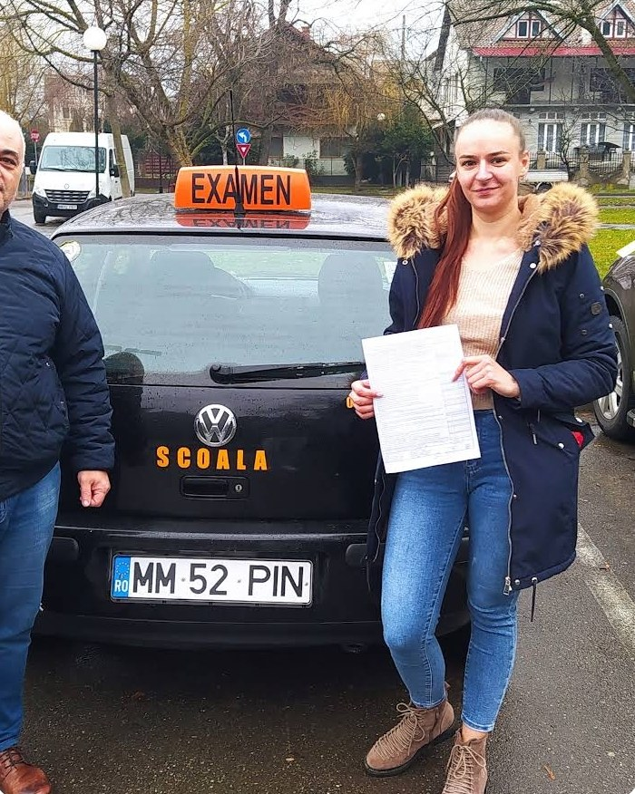

Înscriere & dosar
Te ghidez prin acte: fișa medicală, avizul psihologic și cazierul judiciar — pe care îl poți obține online, de pe Ghișeul.ro.
Din 17 ani și 9 luniLecții cu răbdare, explicații clare și un singur obiectiv: să te simți în siguranță la volan — la examen și în fiecare zi după el.

„Nu te pregătesc doar pentru un examen de 30 de minute. Te învăț să conduci în siguranță o viață întreagă.”
Sunt Claudiu Pintea, instructor auto autorizat pentru categoria B în Sighetu Marmației. Lucrez cu fiecare cursant în parte — fără grabă, fără țipete, fără presiune inutilă.
Știu că primele ore pot aduce emoții. De aceea începem în ritmul tău, pe străzi liniștite, și construim încrederea pas cu pas, până când traseele din oraș devin rutină.
Metoda se adaptează omului: unii au nevoie de mai multă teorie explicată pe exemple concrete, alții de mai multe ore în trafic real. Scopul rămâne același — un șofer sigur, nu doar un permis.
Un parcurs clar, în patru etape, pe care îl parcurgem împreună.
Te ghidez prin acte: fișa medicală, avizul psihologic și cazierul judiciar — pe care îl poți obține online, de pe Ghișeul.ro.
Din 17 ani și 9 luniRegulile de circulație explicate pe situații reale, plus exersare constantă pe chestionarele oficiale DRPCIV.
Teorie aplicatăDe la pornire și manevre în spații liniștite, până la intersecții, sensuri giratorii și parcări în trafic real.
Trafic real în SighetParcurgem traseele folosite la examen, în condiții cât mai apropiate de proba reală, ca să ajungi pregătit și calm.
Pregătit din primaPermisul categoria B se obține de la 18 ani, dar poți începe școala de șoferi cu 3 luni înainte de a împlini această vârstă.
Actul de identitate, fișa medicală (aptitudine pentru categoria B), avizul psihologic și certificatul de cazier judiciar. Cazierul îl poți obține gratuit online, prin Ghișeul.ro și hub.mai.gov.ro — găsești pașii explicați pe pagina Examen & Ghid.
Deloc — e cel mai normal lucru. Începem în zone liniștite, într-un ritm confortabil pentru tine, și creștem dificultatea doar când ești pregătit. Încrederea vine din repetiție, nu din presiune.
Da. Dacă ai permis dar nu ai mai condus de mult sau nu te simți sigur în oraș, parcare ori sensuri giratorii, putem lucra exact pe punctele care te încurcă.
Programul se stabilește împreună, în funcție de disponibilitatea ta — dimineața sau după-amiaza. Cel mai simplu este să suni sau să trimiți un mesaj pe WhatsApp.
Examenul teoretic și cel practic se susțin la Serviciul Public Comunitar Regim Permise de Conducere și Înmatriculare a Vehiculelor din județul Maramureș. Detalii despre fiecare probă găsești pe pagina Examen & Ghid.
Ce spun foștii cursanți despre răbdare, siguranță și promovarea din prima.
[Exemplu] Un instructor cu multă răbdare, care explică totul calm și clar. Am luat permisul din prima.
[Exemplu] Aveam emoții foarte mari la început. Lecțiile au fost relaxate și m-am simțit în siguranță la fiecare oră.
[Exemplu] Explicații clare pentru fiecare manevră și multă practică pe traseele de examen. Recomand cu încredere.
[Exemplu] Am făcut ore de perfecționare după o pauză lungă de la volan. Acum conduc fără stres prin oraș.
[Exemplu] Profesionist, punctual și foarte calm. M-a ajutat să trec peste frica de sensurile giratorii. Promovat din prima!
Sună, scrie pe WhatsApp sau completează formularul de înscriere — te contactez eu pentru detalii.
Înscrie-te acum